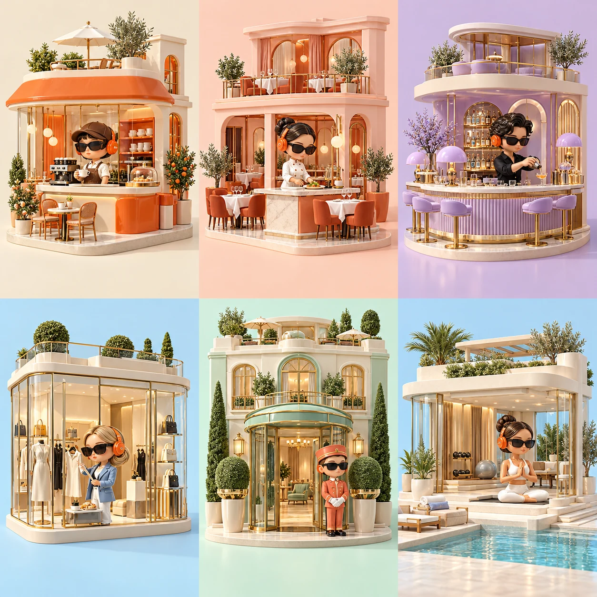

Sky Blue
#73C9FF
Цвет, типографика, компоненты и коллекция персонажей.
#73C9FF
#FF691F
#F9FCFF
#162538
#C9B7FF
#A8EEDC
Unbounded 600 / 800 для заголовков. Manrope 400 / 700 / 800 для интерфейса.
Радиус: 32 px. Карточки: 24 px. Кнопки: 100 px.
Тень: 0 20px 70px #1625380d.
Основная сетка: 12 колонок, максимальная ширина 1280 px.
Оранжевые кнопки используют тёмный текст. Акцентный текст на белом: #C94708. Фокус: #2168A4. Мобильная компоновка включается при ширине 800 px. Системное уменьшение анимаций поддерживается.
Кофейня / бариста · Ресторан / шеф · Бар / куратор
Магазин / стилист · Отель / консьерж · Фитнес и SPA / тренер

Общие признаки: округлые виниловые формы, оранжевые наушники, очки, керамика и стекло. Главный куратор всегда без волос.
Плеер: пауза, играет, изменение громкости.
Все состояния демонстрационные, без аудиопотока.
Бизнес-категории и временная шкала работают локально. Вход, демо эфира и страницы продукта ведут на подтверждённые маршруты promo-music.ru. Цены не загружаются из API и намеренно не указаны. Для подключения к продукту нужен исходный репозиторий и проверка авторизации, тарифных настроек и платежей.
Техническая карта интеграции ↗